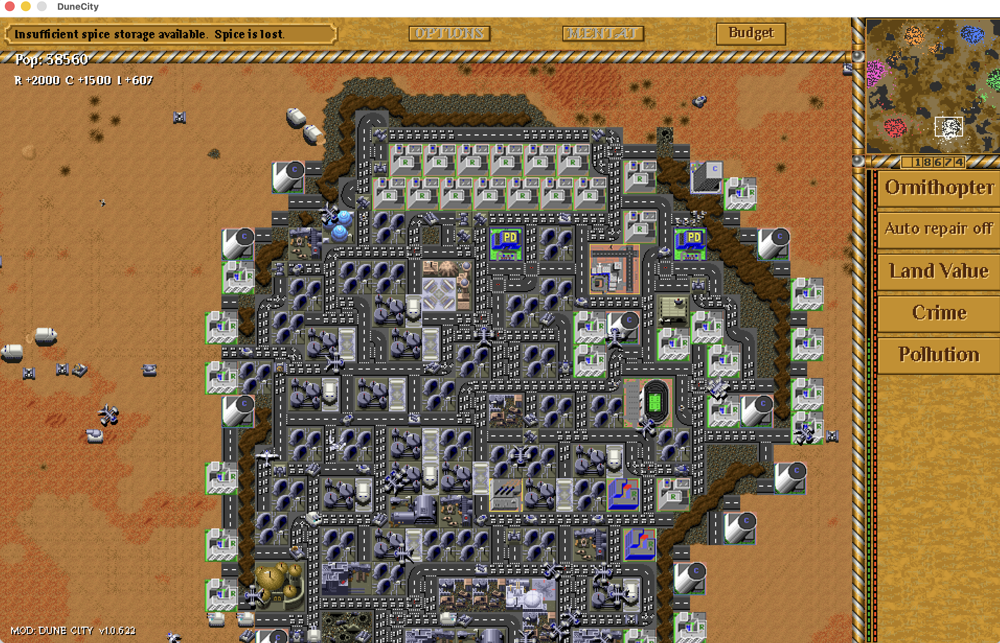
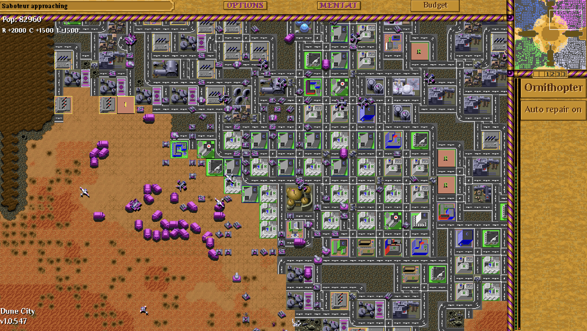

FIELD MANUAL / 02
Build a city. Fund the war.
Dune City brings ideas from classic SimCity into Dune II: homes and jobs, roads and traffic, pollution, crime, land value and tax management.
What am I trying to achieve?
Run a healthy second economy that adds passive credits to your spice income. Spend those credits on your base and army to complete the mission. Enemy city economies can do the same, so falling behind economically can leave you outnumbered.
The output is credits, not more spice. City taxes do not pass through a Refinery. Both income sources add to the same treasury.
Your first city
Choose Dune City in the campaign or custom-game mod selector. You still play Dune: start with power, a Refinery, spice harvesting and defence. Build a small city with your spare credits.
- Keep power ahead of demand. Windtraps supply a global house power pool shared by military and city buildings. Build more when demand overtakes supply. No power lines are required.
- Place a small mix of zones. Residential (R) supplies homes; Commercial (C) and Industrial (I) supply jobs. Each zone occupies 2 × 2 tiles. Do not fill all your land with one type.
- Connect them with Roads. Give zones access to a continuous road network connecting homes with jobs. Concrete foundations and Roads are separate; a concrete-only route does not do the job.
- Separate homes from pollution. Place industry towards the edge of the city, away from homes, while keeping useful road connections. Leave space to improve routes and add services.
- Let the city develop. Growth takes time. Read R/C/I demand before adding zones; fix power and access before expanding a stalled neighbourhood.
- Review Budget and protect the city. Watch unemployment, tax income, service spending and local conditions. Add powered Police Stations and fund their coverage as the city grows. Keep cash and units for defence.

What do the top-left numbers mean?
| Readout | Meaning | What to do |
|---|---|---|
| Pop | Your house’s combined city population/activity display across R, C and I. It includes the commercial and industrial sectors; it is not your army count or credits. | Use Budget’s breakdown to distinguish homes and jobs. |
| R / C / I | Demand for Residential / Commercial / Industrial development, not building counts or income. | Positive values suggest room to grow. Negative values indicate oversupply or poor conditions. Zero is balanced. |
| Credits below the radar | Your spendable treasury, fed by both spice refining and city income. | Reserve enough for repairs, power and defence. |
| Budget | Tax and police funding controls, forecasts, population, unemployment and city conditions. | Review it when growth or income changes. |
Shift+C toggles extra city statistics. Empty land or a new city can show zero or unmeasured values; allow the simulation to develop before judging the result.
Roads connect the economy; traffic tests the layout
Residents need access to jobs. Use the Road construction item, or Shift+R to enter road placement. Click to place and press Esc to cancel. Make continuous connections between R, C and I rather than isolated decorative road tiles.
As the city grows, busy routes can create traffic and pollution. Shift+3 displays traffic. Spread development, improve connections and avoid forcing an entire city through one crowded route. Roads cost credits to build but have no ongoing upkeep.
Dune City borrows classic SimCity’s relationships, but it is not an exact copy: zones are 2 × 2, roads are separate from concrete, and power comes from your house’s global supply.
Pollution, land value and crime
Cleaner homes support a stronger tax base
Industrial pollution and heavy traffic hurt nearby conditions. Keep homes away from the worst sources. Land value influences development and tax revenue; adding more houses to an unhealthy district can make the underlying problem larger.
Jobs and police solve different parts of crime
Too many residents without enough work raises unemployment. Supply reachable C/I jobs where demand supports them. Police Stations provide police coverage: ordinary troops and Barracks do not replace them. Keep stations powered, check coverage and fund them in Budget.
Severe crime can create hostile troublemakers. Enemy units near the city also harm conditions. Defend the neighbourhood and address jobs, funding and coverage together.
Use overlays to locate problems
Deselect units and buildings to reveal the sidebar’s Land Value, Crime and Pollution buttons. Click again to hide the selected layer. Green means better land value or lower crime; pollution runs from clean green to polluted purple.
| Shortcut | Overlay |
|---|---|
| Shift+1 | Clear overlays |
| Shift+2 | Power |
| Shift+3 | Traffic |
| Shift+4 | Pollution |
| Shift+5 | Land value |
| Shift+6 | Crime |
| Shift+7 | Population |
Once the essentials work, a Stadium can improve surrounding land value and an Airport can support commerce. Check availability and cost before investing; they do not replace roads, power, jobs or defence.
Make the city pay its way
- Open Budget or press Shift+B.
- Adjust Tax Rate and Police Funding with the minus/plus controls.
- Compare Projected Tax, service spending and Net. Review unemployment and environmental conditions below.
- Choose Confirm to apply the values, or Cancel to leave them unchanged.
The forecast uses city-year rates, not credits per real-world second. The Cash Flow readout also shows the net rate per simulation second. Income and service costs enter the treasury gradually. New construction, military queues and paid repairs are separate expenses, so a positive city forecast does not guarantee your overall credits rise.
Higher tax can bring more immediate revenue but reduce demand and growth. Lower police funding saves money but weakens coverage. Start near the defaults, change one lever at a time, and watch the result before reacting again.
A city-building strategy that supports the battle
Opening: secure spice income and power, keep defenders, and start a small connected R/C/I neighbourhood. Avoid spending all your credits on zones that cannot yet grow.
Expansion: follow demand, balance homes with jobs, keep industry away from homes, and extend police coverage as the city spreads. Fix a failing district before duplicating it. Review the budget after major expansion.
War: use passive credits to sustain military production and replace losses. Protect the city’s approaches and keep a reserve; your opponent’s second economy can also build a larger army.
Victory: follow the mission or map’s objective. City building usually supports the military or credit objective. Some maps can explicitly enable an economic population victory; there is no universal city-size target for every match.

Prefer to concentrate on the army? Choose AI Support to manage construction and economy, or share the house with a friend and agree who manages the city.
When things go wrong
| Symptom | Check first |
|---|---|
| Zones stay empty or decline | Global power, a continuous road route to jobs, demand, pollution and crime. Positive demand alone is not enough. |
| High unemployment | Reachable Commercial/Industrial jobs. More Residential zones alone add to the imbalance. |
| Land value falls | Pollution, traffic, crime and enemy pressure near the affected buildings. |
| Police seem ineffective | Power, Budget funding and coverage where the crime is. Add coverage to gaps rather than relying on a distant station. |
| Credits still fall | City net income versus service costs, construction, military queues, active repairs and AI partner spending. |
| No city construction items | The selected mod and the mission’s technology limits. Choose Dune City rules; a city-themed map does not enable them on its own. |
| I do not know what wins | Re-read the briefing and map objective. The city funds that goal; population growth alone is not a default victory. |